Natuurweetje
Kleine verhalen over wat er in en rond Ankeveen leeft. In het voorjaar elke week een nieuwe.
Wij zijn een werkgroep van ruim veertig vrijwilligers die zich inzet voor meer natuur in en om ons dorp. Van zeismaaien tot zwaluwbescherming – samen, en met plezier.
Met praktische, kleinschalige projecten maken we samen een groot verschil voor de natuur in Ankeveen.
In overleg met de gemeente onderhouden we bermen, veldjes en De Ruige Hoek met de zeis. Het maaisel voeren we af, zodat de bodem verschraalt en wilde bloemen de kans krijgen.
Meer over de Zeisbrigade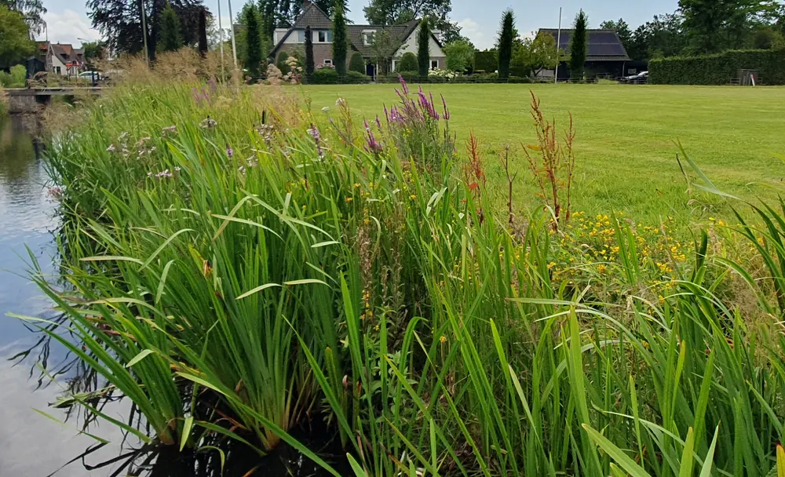
Bij de IJsclub, het Bergse Pad en de Buhrmanlaan legden we oevers aan met inheemse planten. Daarna houden we ze bij door woekerende soorten uit te dunnen.
Meer over de oevers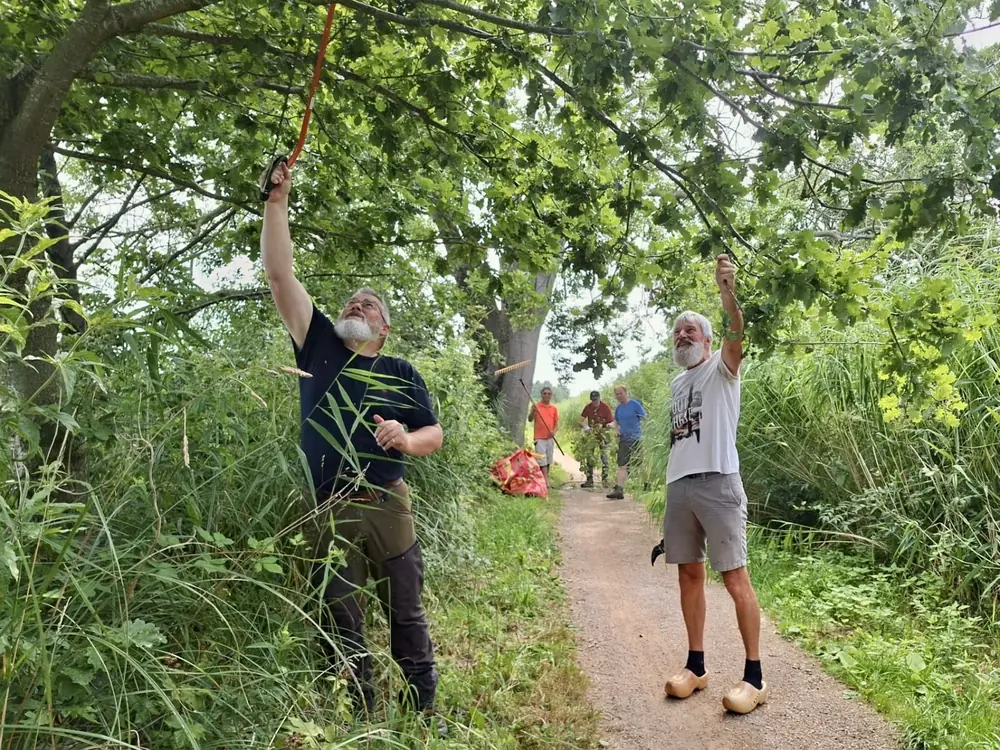
Samen met Waternet en Natuurmonumenten onderhouden we sinds 2025 het hele Bergse Pad, van de Gele brug tot de Goog brug.
Meer over het Bergse PadVan 6 naar 25 nesten in één buurt, in één jaar. Met kunstnesten en een zwaluwtil helpen we deze sympathieke trekvogeltjes.
Meer over de zwaluwenWe werken uitsluitend met inheemse planten, struiken en bomen, biologisch gekweekt bij betrouwbare kwekers.
Meer over aanplanten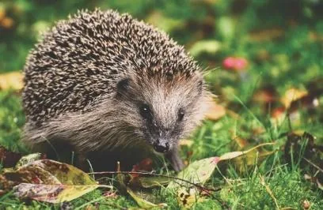
Gratis egelpoortjes voor in de schutting, en wildcamera’s in de tuin om te ontdekken wat er ’s nachts door Ankeveen sluipt.
Meer over de egels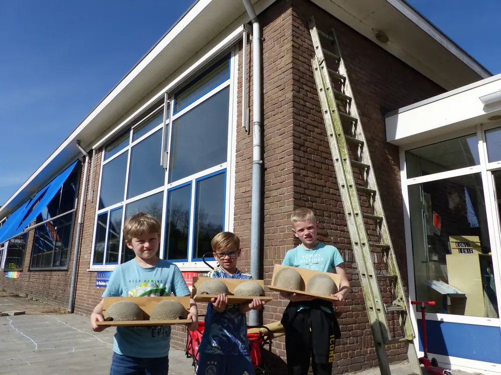
Met de Joseph Lokinschool maken we vogelhuisjes en insectenhotels, planten we samen en vertellen we over biodiversiteit.
Meer over educatieEen spectaculaire comeback in een paar jaar tijd.
In 2024 waren er nog maar 6 huiszwaluwnesten in de Ooievaarsbuurt. Na het plaatsen van 54 kunstnesten en een zwaluwtil steeg dat in 2025 naar 25 nesten. De zwaluwen bouwden vaak hun eigen nest, vlak naast onze kunstnesten – die gaven het signaal dat dit een veilige plek is om te broeden.
In heel Ankeveen telden we in 2025 zo'n 70 succesvolle broedgevallen.
De telling van 2026 volgt binnenkort.
We hangen graag gratis nestkastjes bij u op, als uw huis geschikt is: een witte dakrand, een vrije aanvliegroute en een hoogte van minimaal 4 meter.
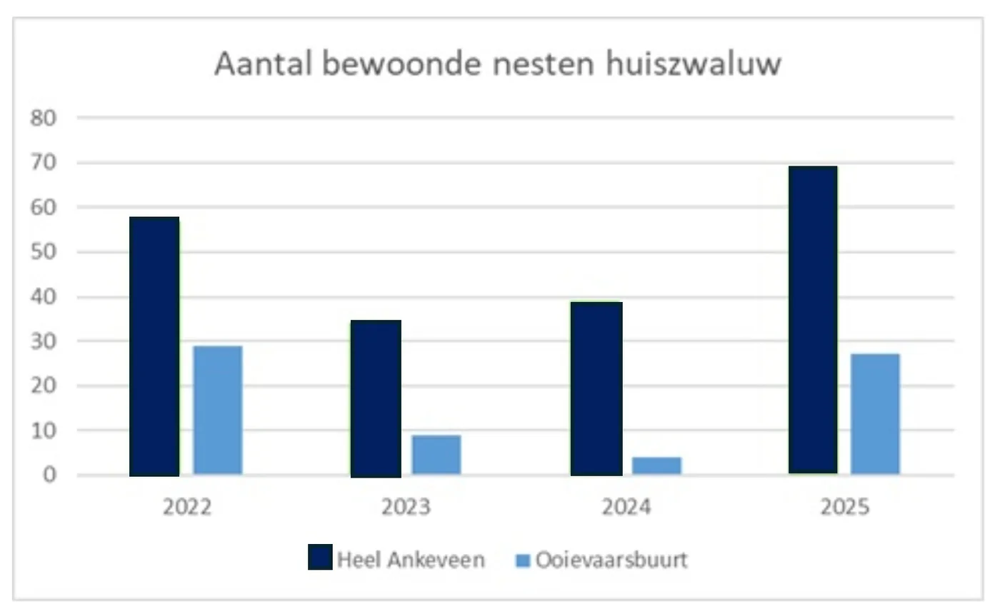
Aantal nesten per jaar. Klik om te vergroten.
Kleine verhalen over wat er in en rond Ankeveen leeft. In het voorjaar elke week een nieuwe.
De laatste updates over onze projecten.
Gratis egelpoortjes voor de schutting en wildcamera’s in de tuin: doe mee.
Een recordaantal broedgevallen in Ankeveen, dankzij de kunstnesten en de zwaluwtil.
Samen met Waternet en Natuurmonumenten nemen we het onderhoud van het hele Bergse Pad op ons.
Gefinancierd door de Vogelwerkgroep Het Gooi en Omstreken.
Vijf Ankeveners vormen het kernteam. Daaromheen staat een grote groep vrijwilligers die het echte werk doet. Klik op een foto voor meer.
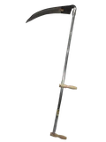
stond in 2025 vrijwel altijd paraat · zeiscursus gevolgd
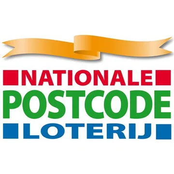
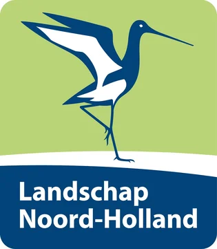
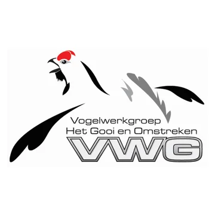
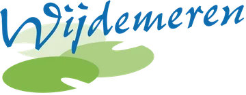
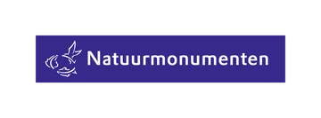
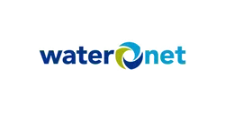
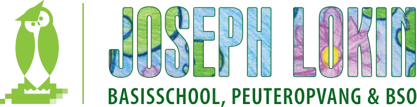
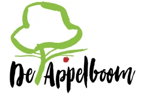
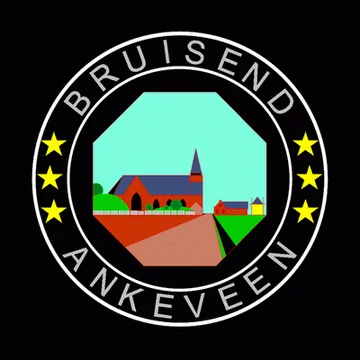

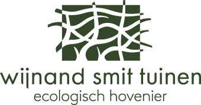
Kies hoe je ons wilt bereiken.